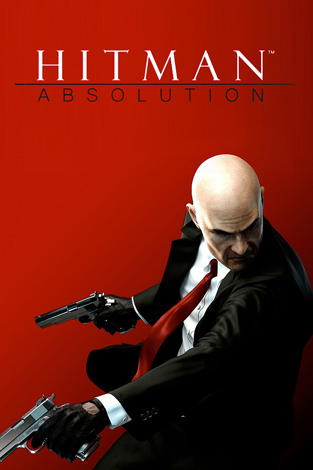
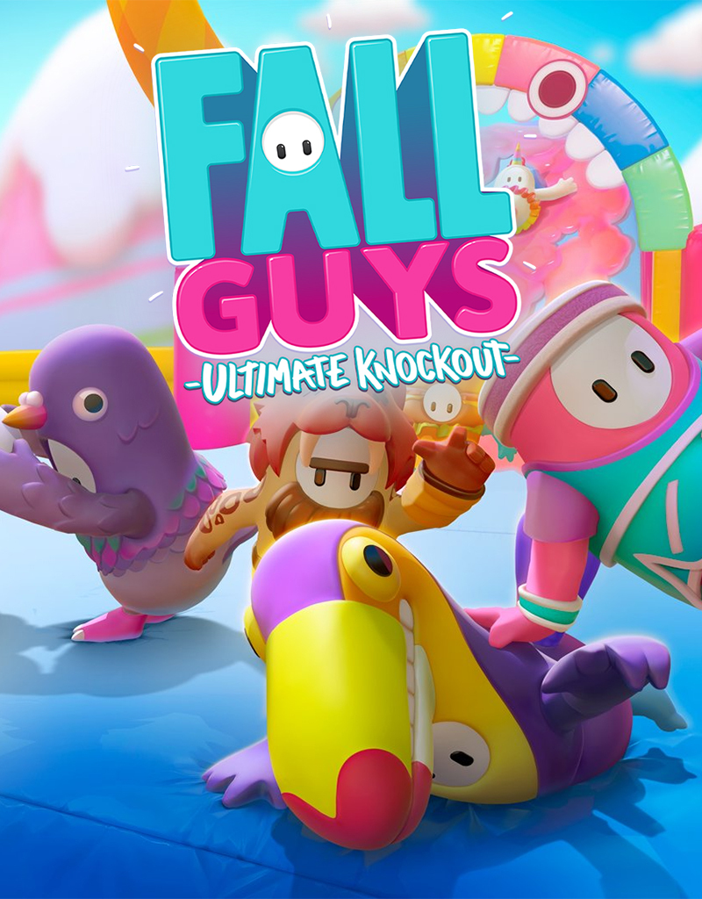
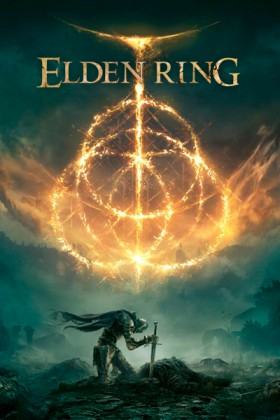
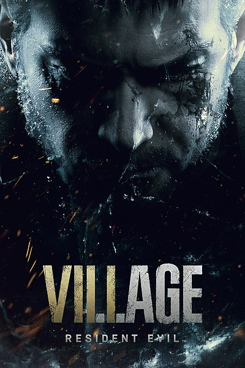
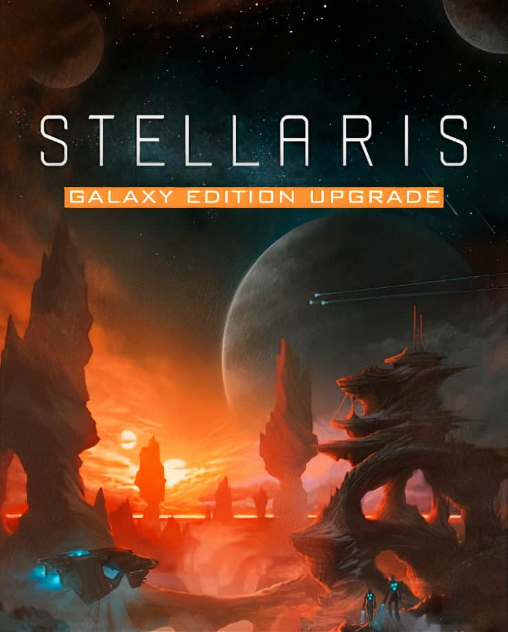
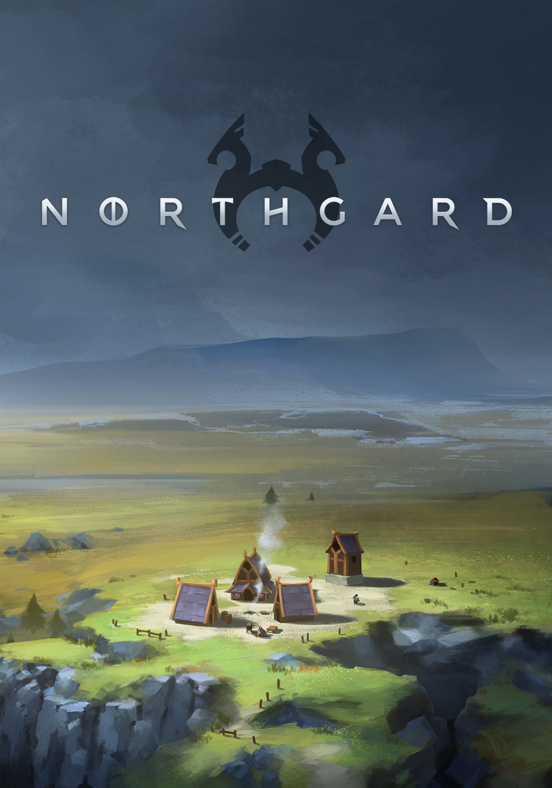
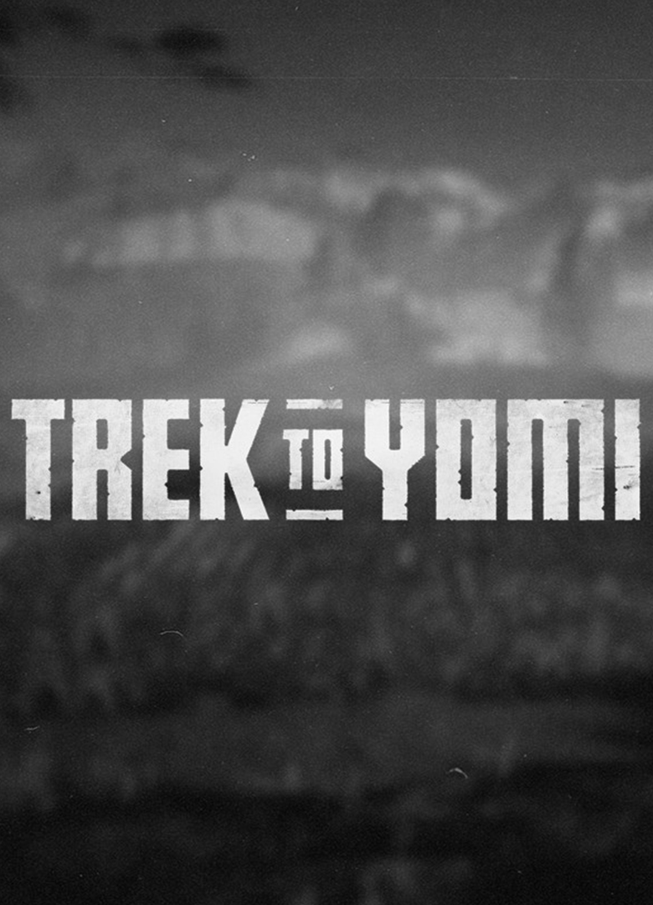
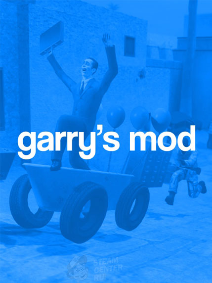

Hitman (с англ. — «Наёмный убийца») —
серия компьютерных игр в
жанре стелс-экшен, доступная
на многих современных платформах.
Действие развивается вокруг профессионального клона-киллера, известного
под кодовым именем Агент 47 (или просто «47-й»).

Hitman
-75%
Fall Guys — мультиплеерная
королевская битва, в которой,
вместо отстрела противников,
нужно соревноваться на полосе
препятствий. В матчах могут
принять участие до 60 игроков. Каждый забег поделен на 4-5 уровней, в ходе которых постепенно выбывают нерасторопные участники.

Fall Guys
-36%
Elden Ring — игра с
открытым миром; по словам
Хидэтаки Миядзаки, в его по
нимании это «большое открытое простр
нство», которое можно свободно исследовать. Это
т открытый мир должен содержать различные опасности и области, которые можно исследовать, в
том числе многоуровневые замки.

Elden Ring
-10%
Resident Evil Village —
компьютерная игра в жанре survival horror.
Часть серии Resident Evil и
продолжение Resident Evil 7: Biohazard. В качестве
разработчика и издателя игры выступает компания Capcom.

Resident Evil:Village
-30%
Stellaris - это большая стратегическая
игра в реальном времени, действие
которой разворачивается в космосе,
в далеком будущем. Игроки играют в
качестве правительства вида на ранних
этапах исследования межзвездного пространства.

Stellaris
-76%
Northgard – это стратегия в
реальном времени, призванная
основать поселение и расширить его,
вплоть до доминирующих размеров.
В самом начале раунда игроки распределяют
людей по карте, отправляя рабочих
на заготовку пищи, добычу ресурсов и постройку зданий.

Northgard
-60%
Молодой самурай Хироки поклялся умирающему
мастеру, что защитит свой город и дорогих
людей от любых угроз. Столкнувшись с трагедией,
юноша должен исполнить долг и в одиночку отправиться в путешествие
за гранью жизни и смерти, чтобы преодолеть себя и определить...

Trek to Yomi
-10%
Garry’s Mod — компьютерная игра,
физическая «песочница», которая позволяет игроку
манипулировать объектами и экспериментировать
с физикой, реализм которой обеспечивается движком Source.

Garry's Mod
-20%